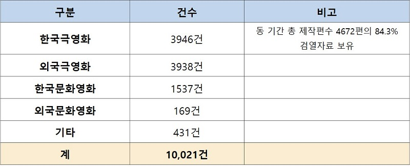
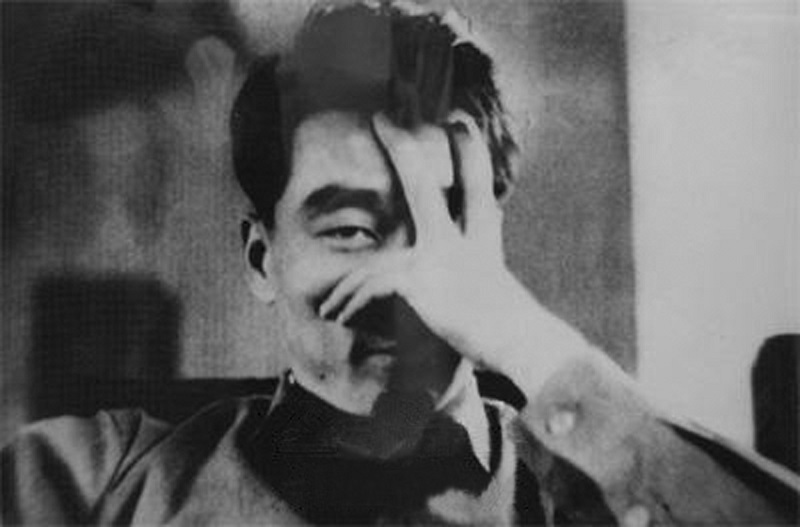
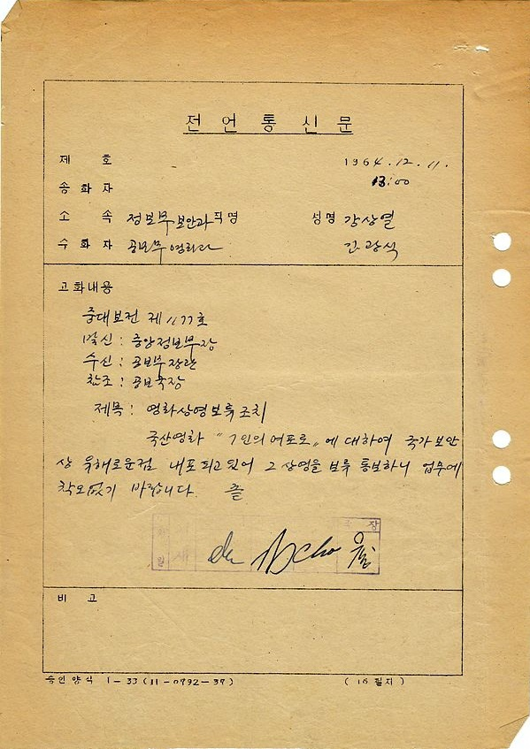

KOFA 컬렉션
이만희와 검열
검열자료컬렉션 감독편 1: 이만희
한국영화사의 가장 중요한 문서사료 온라인으로 공개되다
식민지 조선에서 처음으로 영화가 만들어진 이래 1996년 영화법의 사전심의가 위헌판결을 받기까지 오랜 기간 검열은 한국영화의 장애물이었습니다. 검열은 한국영화를 피폐하게 만든 제1의 원인이로 지목되었으며, 수많은 감독들이 증언을 통해 검열의 피해를 호소해왔습니다. 1960-70년대 10편 이상의 영화를 만들었던 주류 감독이라면 검열에 관한 일화 혹은 영웅담 몇 가지는 가지고 있기 마련입니다. 그러나 전설처럼 구전된 검열의 일화들은 국가의 억압에 맞선 영화 창작자들의 용기를 증명하는 것이기도 하지만, 다른 면에서 검열 과정을 신비화시켰으며, 실제적인 검열행정의 과정을 가리는 역할을 했던 것도 사실입니다.
그러나 한국영상자료원이 2010년대 초 이후 점차적으로 검열자료를 공개하면서 검열의 실체에 접근할 수 있는 통로가 마련되었습니다. 한국영상자료원은 지난 1998년 현 영상물등급위원회의 전신인 공연예술진흥협의회로부터 1950년대 중반부터 1990년대 중후반까지 약 1만건에 이르는 검열자료를 수증받아 보존해 왔고, 2010년대 초부터 이를 순차적으로 디지털화하여 원내 열람실을 통해 서비스해오고 있습니다. 40년 이상 한 국가의 검열 및 행정문서가 이 정도로 방대한 분량으로 보존된 것은 세계적으로 유례가 없는 일로, 이는 영화 검열 뿐 아니라 지난 40여 년간 문화생산 환경과 국가의 관계를 종합적으로 살펴볼 수 있는 매우 중요한 자료라 하겠습니다. 그러나 이 서류들은 자료원에 직접 방문해야 열람할 수 있어, 소수의 연구자들 외에는 그 존재가 널리 알려지지 않았습니다.
이에 한국영상자료원은 자체 컬렉션 공개사업 일환으로 주제별 검열자료를 온라인을 통해 공개하기로 하였고, 그 첫 번째 주인공으로 이만희 감독을 선정했습니다. 이만희 감독은 1961년 <주마등>으로 데뷔하여 유작 1975년 <삼포가는 길>에 이르기까지 총 51편의 영화를 연출하였는데, 그 중 한국영화사의 최고 걸작이라 일컬어지는 <만추>(1966)와 한국전쟁 영화 <돌아오지 않는 해병>(1963), 문예영화 <삼포가는 길>(1975) 등의 영화가 널리 알려져 왔습니다. 2000년대 이후에는 <귀로>(1967), <검은 머리>(1964), <휴일>(1968), <마의 계단>(1964) 등 그의 다양한 영화들이 재발견되며 명실상부 한국영화사를 대표하는 거장의 위치에 올랐습니다. 그러나 그가 영화를 만들던 내내 검열로 피해를 받은 대표적인 감독이라는 사실은 잘 알려져 있지 않습니다.
이만희 감독(1931~1975)
이만희와 검열
이만희 감독과 관련하여 널리 알려진 검열의 사례들은 다음과 같습니다. 이만희는 한국에서 최초로 반공법 위반 혐의를 받아 구속까지 되었던 감독(<7인의 여포로>(1965) 사례)입니다. 이 영화는 이후 검열로 만신창이가 된 채 제작사에 의해 재편집되어 <돌아온 여군>이라는 제목으로 개봉이 되었습니다. 여기에 출옥 후 진정한 반공영화를 만들어보자고 영화를 만들었으나, 북한군의 복장이 너무 멋있어서 검열에서 지적당했다는 <군번없는 용사>(1966)의 일화가 더해집니다.
<7인의 여포로> 상영보류 지시서류(중앙정보부 전언통신문, 1964.12.11)
1964년 <7인의 여포로> 검열 과정에서 중앙정보부가 돌연 이 영화에 대한 상영보류 조치를 지시한 근거 서류. 이후 이 영화의 상영은 중단되었고, 이만희 감독은 이듬해인 1965년 2월 초 반공법 위반으로 구속된다.
한국사회를 너무 어둡게 그렸다는 이유로 영화의 개봉이 금지당했던 <휴일>(1968)의 사례도 있습니다. 여기에는 또한 엔딩 장면을 수정하면 검열을 통과시켜주겠다는 정부의 회유가 있었으나, 감독 본인 뿐 아니라 시나리오 작가, 제작자까지 이를 거부하고 상영을 포기했다는 일화가 함께 전해집니다. 이 영화는 2005년 한국영상자료원 수장고에서 필름이 발견되어 무려 37년 만에 빛을 보기도 했습니다.
또한 1974년 이만희는 영화진흥공사가 직접 제작한 반공 국책영화인 <들국화는 피었는데>를 연출하였는데, 이 영화는 반공영화보다는 반전영화의 메시지가 더 강하여 문공부와 갈등을 빚었고, 최종적인 편집을 포기했다고 전해지기도 합니다. <삼포가는 길>(1975)에서는 문공부의 검열을 피하기 위해 한국의 발전상을 보여주는 상징적인 장면으로 마지막 남해대교 장면을 넣었다는 증언도 있습니다.
명확한 검열의 사례라 할 수는 없겠지만, 적성국가인 폴란드의 영화를 표절했다는 혐의를 받아 소동을 일으켰던 <기적>(1967)의 경우도 있습니다. 이 영화의 표절을 둘러싼 소동은 거의 1년 간 지속되었고, 그 사이에 영화는 제대로 된 평가를 받지 못하고 사장되었습니다. 영화음악을 배제한 사운드 실험으로도 유명했던 이 영화는 이만희의 대표작 중 하나일 수 있었으나, 안타깝게도 필름이 남아있지 않아 그 실체를 확인하지 못해 아쉬움을 더합니다.
컬렉션의 구성
이번에 한국영상자료원이 공개한 검열자료는 이만희의 총 연출작 51편 중 자료원에 보존된 47편의 자료입니다. 각각의 자료는 제작의 신고에서부터 시나리오 검열, 예고편 검열, 본편 검열 등의 각종 검열의 내용은 물론, 관련된 행정절차까지 포함하는 여러 서류들로 구성되어 있습니다. 47건의 검열서류를 총 쪽수로 환산하면 2,519쪽에 달합니다. 적게는 24쪽부터(<불효자>(1961)) 많게는 147쪽(<기적>)까지 분포되어 있습니다. 영화 당 평균 54쪽에 이르는 분량입니다. 물론 그 가운데 민원서류에 구비해야 할 다양한 방계 서류들(세금납부증명서와 같은)이나 수입인지가 상당 분량을 차지합니다. 이들은 시각에 따라서 유용한 자료가 될 수도 있지만 검열의 내용과 직접적으로 관련이 있거나, 정보량이 많다고 보기는 어렵습니다.
검열서류 자체가 존재하지 않거나(<휴일>과 <삼포가는 길>) 일화로만 전해지는 경우들이 있어, 이 서류들이 앞서 언급한 다양한 검열의 일화들을 모두 증명하지는 못하지만, 몇몇은 확인되기도 합니다. 예컨대 무려 129쪽에 달하는 <7인의 여포로(돌아온 여군)>의 검열서류에는 문화공보부에 의해 무사히 검열을 통과했다가, 중앙정보부에 의해 갑자기 상영이 중지되고 감독이 구속당했던 당시의 급박한 상황이 꼼꼼히 기록되어 있고 영화사의 재편집과 재촬영의 부분 역시 씬 별로 자세히 확인할 수 있습니다. 또한 <기적>의 표절 여부를 가리기 위한 1년 여 간의 검증의 시도들과 이로 인해 빚어진 문공부와 문화계 사이의 갈등은 147쪽의 방대한 서류로 남아있습니다.
앞서 언급된 검열사례 외에도 1) 상영기간 연장 신청 시, 해당 시점에 금지곡이 된 신중현의 “미인” 수록곡이 포함되어 연장이 불가능하다는 판정을 받았으나, 제작사의 진정으로 해당 곡의 삽입 부분만 편집된 채 상영기간 연장 허락을 받았던 <태양 닮은 소녀>(1974)의 사례, 2) 액션영화임에도 중앙정보부가 검열자로 참여했던 <다이알 112를 돌려라>(1962)의 사례 3) “내용이 저속하고 잔인”하다는 이유로 시나리오 전면개작을 통보받았던 <검은 머리>(1964), 4) 독립군을 방탕하게 그렸다는 이유로 마찬가지로 시나리오 전면개작을 통보받았던 <흑룡강>(1965)의 사례 등 이번에 공개되는 검열서류를 통해 새롭게 확인할 수 있는 다양하고 흥미로운 사실들 역시 존재합니다.
<태양닮은 소녀> 연장신청 시 검열서류(1975.11.6)
1974년 작 <태양닮은 소녀>의 상영기간 연장 신청 시, 영화제작 이후 금지곡이 된 신중현의 <미인>을 삽입한 장면을 삭제하라는 명령이 담긴 서류
한국영상자료원은 이번 이만희 영화 검열자료 컬렉션을 필두로 다양한 주제의 검열자료를 공개할 예정입니다. 감독으로는 유현목, 김기영, 하길종, 주제로는 분단, 섹슈얼리티, 액션 장르, 시기별 수입외화 등을 예정하고 있습니다. 이 자료들은 향후 한국영화의 검열사 뿐 아니라, 한국영화사 나아가 대중문화의 역사 전반을 재구성함에 있어 필수적인 사료가 될 것으로 기대됩니다.
이만희 감독의 검열서류의 원문은 한국영상자료원이 운영하는 KMDb의 온라인사료관(https://www.kmdb.or.kr/history/leaflet)을 통해 확인 가능합니다. 또한 이 페이지에서 한국영상자료원 검열자료에 대한 소개글(“한국영화 검열서류 독해를 위한 안내”), 이만희 검열자료 컬렉션에 대한 해제와 분석글을 다운받을 수 있습니다.